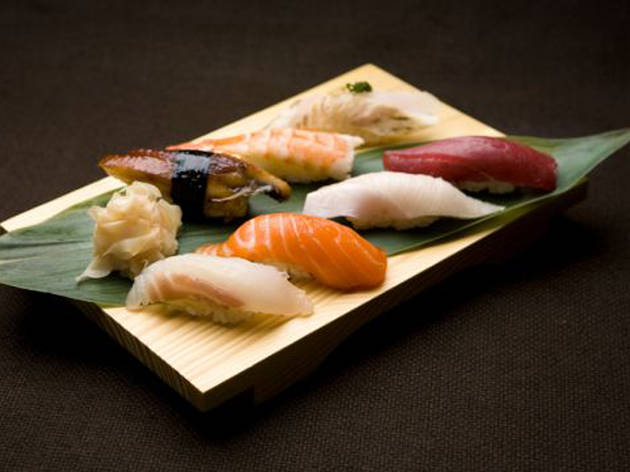

My favorite sit down restaurant in the city is Inakaya which is a Japanese restaurant, it has really nice environment of Japanese style, and the food is really delicious.
I am a little bit tired this morning and I am looking forward to the class.